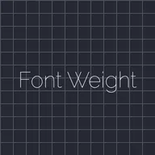

Letterdikte

Bepaalt hoe dik de letters zijn, van dun tot zwaar, en is te animeren met keyframes. Werkt met variabele lettertypen, die elk gewicht in één bestand bevatten: Raleway, Quicksand, Comfortaa, Lora, Bitter, Orbitron, Playfair Display en Dancing Script in de lettertypelijst, of een variabel lettertype dat je importeert. Lettertypen met vaste gewichten behouden hun eigen uiterlijk.
Letterdikte maakt de letters van een tekstlaag dunner of vetter. Gewicht gaat van 1 tot 1000: 100 is dun, 400 normaal, 700 vet en 900 zwart. Animeer het met keyframes en de letters worden vloeiend vetter of dunner.
Je hebt er een variabel lettertype voor nodig: een lettertype met alle diktes in één bestand. In de lettertypelijst zijn dat Raleway, Quicksand, Comfortaa, Lora, Bitter, Orbitron, Playfair Display en Dancing Script, en het werkt ook met een variabel lettertype dat je zelf importeert. Lettertypen met vaste diktes houden hun eigen uiterlijk.
Instellingen
| Instelling | Type | Bereik | Standaard |
|---|---|---|---|
| Gewicht | Getal | 1 tot 1000 | 400 |